Next Step to Play the Drums - Stick Grip and Hand Position
Lesson Two:
In this lesson I will reveal the first secret of how to play the drums like a pro.
One of the most over-looked details in developing world-class drumming skills is the importance of great fundamentals and basics.
HOW you hold your drum sticks is where drumming mastery begins.
DON'T SKIP THIS LESSON!
Stick Grip
There are two different styles of holding the sticks in drumming.
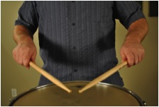Matched Grip
The right and left hands both hold the sticks the same way, they are mirror images of each other. I recommend beginners play the drums starting with matched grip. It is simpler and generally applicable to drumming and percussion performance as a whole.
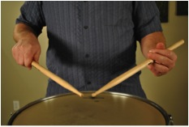Traditional Grip
This special way of holding the sticks originated in a military setting where the drum was carried over the shoulder at a sharp angle and the left hand was turned over to make striking the drum easier. This continued as a very sensible practice and became a tradition in military, marching and rudimental drumming environments.
The tradition of this method of playing has continued to today and can be used to play the drums in any style of music. It is most common in marching percussion and also very common on drum set.
It is a very fun way to play and creates stylistic nuances in the left hand that many drummers enjoy. I love playing traditional grip and believe it is a valuable skill to learn once basics have been mastered with matched grip.
3 Keys to Proper Matched Grip
(Right Hand and Left Hand are identical)
- The bottom 3rd of the stick is placed across the palm from the base of the first finger to the padded part of the palm near the wrist.
- The first finger and thumb grip the stick opposite one another in what is traditionally called the “Fulcrum.”
- The remaining fingers wrap around the stick completely. When you play the drums, the hand is relaxed, (don’t squeeze) but closed around the stick with all available skin touching the stick. This makes the hand and stick one unit that will move together. Where the hand goes the stick goes!
Important Note: This is where my Technique Development process is powerful! Many drumming systems advocate beginning with a very loose and open hand and fingers - they do not say "hold on to your sticks" in the beginning, but you MUST first learn how to CONTROL YOUR STICKS and use your WRISTS properly BEFORE you start letting go and using more advanced rebound techiniques - so be patient and "HOLD ON TO YOUR STICKS!"
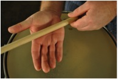Proper stick placement across the palm.
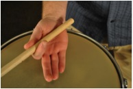Thumb and first finger form the “fulcrum.”
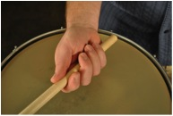Connect the stick to the hand by wrapping ALL the fingers around the stick.
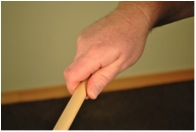Hand is relaxed but closed around the stick. Stick and hand become one unit.
Common Mistakes to Avoid in Matched Grip
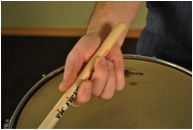Stick too far over, fingers not wrapped around the stick.
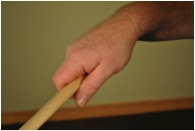Thumbs too low.
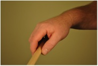Thumb too far forward.
To Clarify a Common Misconception
There will be a time very soon to loosen your grip on the stick and “let go.” But in the beginning when you learn to play drums it is so important to connect the stick to the hand and learn how to move the wrist, hand and stick properly TOGETHER as one unit.
THEN we will be ready to talk about letting go, rebound, fingers, and all that fun stuff! Learn to play the drums by developing your hands and wrists FIRST!
Now let's look at the details of the left hand in TRADITIONAL GRIP.
7 Steps to Building the Proper Traditional Grip
Right Hand: The right hand in traditional grip is the same as matched grip above.
Left Hand Traditional Grip: When you play the drums with traditional grip, the left hand is a bit more complex. Follow each step and illustration below:
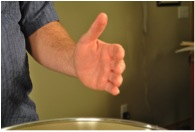Step 1: Hold your left hand out as if you were going to shake hands with another person, fingers together, thumb up.
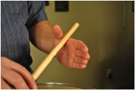Step 2: Place the drumstick in the webbing between your thumb and first finger.
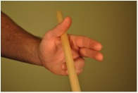Step 3: Curve your third and fourth fingers together and place the stick on top of your third finger, between the base of the fingernail and first knuckle.
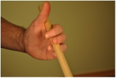Step 4: Lay the first and second fingers naturally across the top of the stick.

Step 5: Place your thumb on top of your first finger knuckle.
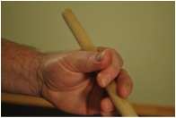Step 6: Keep the base of the thumb down creating a “ski-slope” position for the thumb.

Step 7: Keep the hand turned up so the thumb and first finger connection are on the TOP of the stick, and you palm is facing the wall. If this is done correctly, you can rest your other stick across the top of your hand and it will stay
Common Mistakes to Avoid in Left Hand Traditional Grip
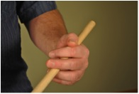Base of thumb and knuckle too high.
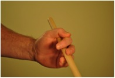First finger and thumb not properly connected at first joint.
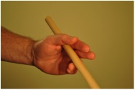Fingers too straight not on top or stick.
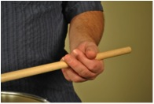Hand not turned up properly.
In conclusion, Be sure to watch videos that accompany this lesson. Learn to hold the sticks properly and set yourself up to succeed and become a world-class drummer!
In the next lesson we will discuss the continuation of proper grip with the proper instrument and hand position to begin playing.
GOOD LUCK!
 Randall Beach, Creator of DrummingExpert.com
Randall Beach, Creator of DrummingExpert.com